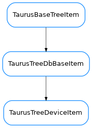

TaurusTreeDeviceItem¶

-
class
TaurusTreeDeviceItem(model, data, parent=None)[source]¶ Bases:
taurus.qt.qtcore.model.taurusdatabasemodel.TaurusTreeDbBaseItemA node designed to represent a device
-
child(row)[source]¶ Returns the child in the given row
- Return type
TaurusTreeBaseItem- Returns
the child node for the given row
-
childCount()[source]¶ Returns the number of childs for this node
- Return type
- Returns
number of childs for this node
-
data(index)[source]¶ Returns the data of this node for the given index
- Return type
- Returns
the data for the given index
-
role()[source]¶ Returns the prefered role for the item. This implementation returns taurus.core.taurusbasetypes.TaurusElementType.Unknown
This method should be able to return any kind of python object as long as the model that is used is compatible.
- Return type
TaurusElementType- Returns
the role in form of element type
-